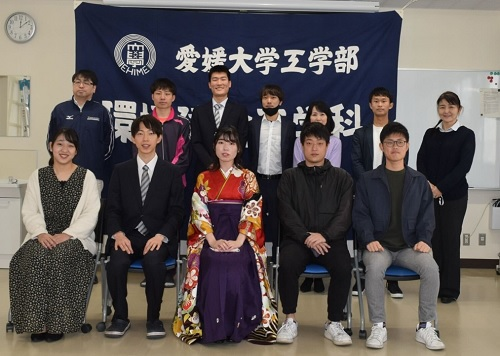
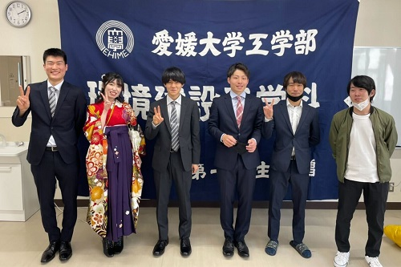
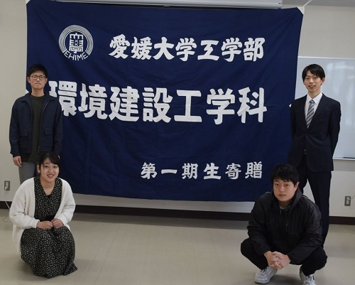

mizukan
イベント
令和２年度 卒業・修了式
3月24日、コロナ禍ということで代表者のみの参加ではありましたが
令和２年度の卒業・修了式が行われました.
今年は、4回生7人、修士2回生6人の計13人

今年度は、コロナ感染症対策のため思うように研究室に来ることができず
大変でしたが、研究を通して色々な面で成長できた年となったと思います．

これから社会人になる人も、大学院で研究を続けていく人も頑張りましょう！

1年間、ありがとうございました!(^^)!
文責 城野